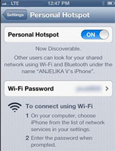

Why Manage My Internet is Valuable
There are many instances where we need as much bandwidth as possible. Online streaming, PC gaming, and other scenarios require sufficient bandwidth in order to operate ideally. Program updates and sync programs, however, tend to use your internet connection when its available to them and not when its convenient to you. The buttons in the Manage My Internet app allow you to correct this problem.
Prevent Data Overages While Tethered
Additionally, many regularly use a shared internet connection as part of their technology experience. If you're traveling, using your phone and its data plan as a WIFI hub is a great convenience. Similarly, limited internet connections are the norm in environments such as on a cruise ship or while flying. These connections allow to continue to work productively and remain on the internet even in the most remote of locations.
At the same time, however, these connections are extremely limited in terms of the bandwidth they offer. If tethered to a phone, you even have to be conscious not to exceed your phone's data plan. Syncing programs largely do not distinguish between what type of connection you are currently experiencing. Consequently, these programs will attempt to sync themselves regardless if you have the bandwidth or data to support it.
The Manage My Internet app changes all that. By using the app, you can be assured that snycing won't take up your data or bandwidth on a shared internet connection. This can save you crucial internet speeds and even prevent unforseen data overages. The best part is that once connected to a normal WIFI or network connection your sync programs will continue as normal.